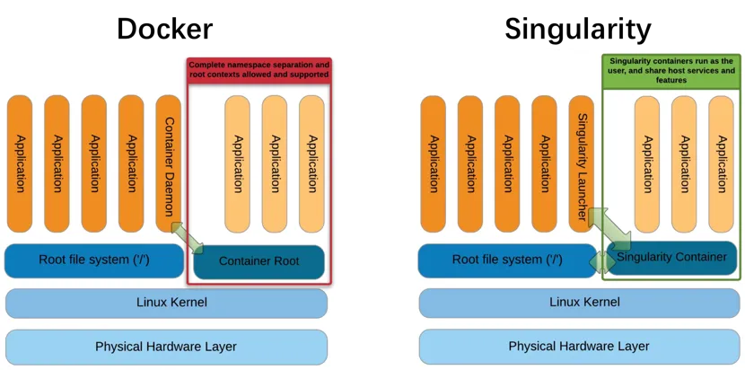

Introduction
在生物信息学（生信）研究领域，数据处理和分析任务日益复杂，对计算资源的需求也越来越高。为了提高研究效率、确保环境一致性和可重复性，容器技术应运而生。Docker和Singularity作为两种主流的容器解决方案，在生信领域得到了广泛应用。本文将简单介绍这两种容器的基本概念、使用方法，至少在面对一些提供了Docker安装方式的软件（有可能其他安装方法都报错😂）时可以作为使用的一个选择。
容器是一种轻量级的虚拟化技术，它允许在单个操作系统实例上运行多个隔离的应用程序。容器将应用程序及其所有依赖项（如库、配置文件等）打包成一个独立的运行环境，称为容器。这种技术使得应用程序可以在不同的环境中一致地运行，而无需担心底层基础设施的差异。
特点
- 轻量级：容器共享宿主机的操作系统内核，因此相比传统的虚拟机，容器需要更少的系统资源，启动更快，资源占用更少。
- 隔离性：容器提供了一定程度的隔离，每个容器都有自己的运行环境，互不干扰。这种隔离是通过操作系统级别的虚拟化技术实现的，如Linux的cgroups和namespaces。
- 可移植性：由于容器包含了运行应用程序所需的所有依赖项，因此可以在不同的环境（开发、测试、生产等）中无缝迁移和部署。
- 可扩展性：容器可以快速启动和停止，这使得它们非常适合用于动态扩展应用程序的规模，以应对变化的负载需求。
- 资源控制：可以为每个容器分配特定的CPU、内存和存储资源，确保应用程序的性能和稳定性。
- 版本控制和一致性：容器镜像可以被视为应用程序的“快照”，可以通过版本控制工具进行管理。这有助于确保在不同环境中部署的应用程序保持一致。
Docker
Docker是目前最流行的容器技术，广泛应用于云计算和开发测试环境，由Docker公司（原名dotCloud）于2013年推出。Docker通过容器技术，将应用程序及其所有依赖项打包到一个独立的单元中，使其能够在任何环境中一致地运行。它通过Docker镜像和容器的概念，实现了应用的快速部署和管理。然而，Docker在高性能计算（HPC）环境中的应用受到一些限制，如权限管理、资源限制等。
Docker的基本组件
- Docker镜像（Image）：一个只读的模板，包含运行应用程序所需的所有文件和依赖项。镜像是构建容器的基础。
- Docker容器（Container）：基于镜像创建的可运行实例。容器可以被启动、停止、删除等操作。
- Docker仓库（Registry）：用于存储和分发Docker镜像的地方。Docker Hub是最常用的公共仓库，用户也可以搭建私有仓库。
- Docker引擎（Engine）：Docker的核心组件，负责构建、运行和管理容器。
基本使用方法
- 安装Docker
在安装Docker之前，请确保系统满足Docker的最低要求。以下是在常见操作系统上安装Docker的简要步骤：
-
Ubuntu：
1 2sudo apt-get update sudo apt-get install docker-ce docker-ce-cli containerd.io -
CentOS：
1 2 3sudo yum install -y docker sudo systemctl start docker sudo systemctl enable docker -
macOS：下载并安装Docker Desktop for Mac。
-
Windows：下载并安装Docker Desktop for Windows。
- 验证安装
安装完成后，可以通过以下命令验证Docker是否安装成功：
|
|
- 基本命令
- 拉取镜像
从Docker Hub或其他仓库拉取镜像：
|
|
- 查看本地镜像
列出本地已有的镜像：
|
|
- 运行容器
基于镜像创建并运行一个容器：
|
|
-
-i：保持容器的标准输入打开。 -
-t：分配一个伪终端。 -
--name：指定容器的名称。 -
查看运行中的容器
列出当前正在运行的容器：
|
|
查看所有容器（包括停止的）：
|
|
- 停止和删除容器
停止容器：
|
|
删除容器：
|
|
- 删除镜像
删除本地镜像：
|
|
- Dockerfile简介
Dockerfile 是一个用于定义如何构建Docker镜像的文本文件。通过编写Dockerfile，可以自动化构建过程，确保镜像的一致性和可重复性。以下是一个简单的Dockerfile示例：
|
|
- 构建和运行自定义镜像
在包含Dockerfile的目录下，使用以下命令构建镜像：
|
|
-t：指定镜像名称及标签。.：指定Dockerfile所在的路径。
构建完成后，运行容器：
|
|
-d：后台运行容器。-p：将宿主机的端口映射到容器的端口。
Singularity
Singularity是一种开源的容器化技术，专为科学计算、高性能计算（HPC）和大规模计算工作流程设计。它允许用户将应用程序、环境和依赖项打包到一个独立的、可移植的单个文件中，称为SIF（Singularity Image Format）容器镜像。这使得用户可以在不同的系统上无缝地运行相同的容器，包括在没有root权限的环境中运行。
基本使用方法
-
安装Singularity
Singularity可以通过源码、包管理器或Conda等方式安装。以下是通过包管理器安装的示例：
1 2 3 4 5# Ubuntu sudo apt-get update && sudo apt-get install -y singularity-container # CentOS sudo dnf install -y singularity -
拉取镜像
1singularity pull docker://ubuntu:latest -
运行容器
1singularity run ubuntu_latest.sif -
进入容器交互模式
1singularity shell ubuntu_latest.sif -
查看容器信息
1singularity inspect ubuntu_latest.sif
Docker转化Singularity容器
Docker和Singularity都是流行的容器技术，但在设计目标、使用场景和功能上有一些关键区别。
设计目标
- Docker：最初设计用于开发、测试和部署微服务，强调快速部署和资源隔离。Docker广泛应用于企业级应用和开发测试环境。
- Singularity：专为高性能计算（HPC）和科学计算设计，强调在无root权限环境下的安全性和可移植性。Singularity广泛应用于HPC中心和大规模计算工作流程。
安全性
- Docker：默认以root用户运行容器，存在一定的安全风险。虽然可以通过用户命名空间等技术提高安全性，但配置较为复杂。
- Singularity：默认以非root用户运行容器，避免了root权限带来的安全问题。它提供了更强的安全保障，适合在多用户HPC环境中使用。
资源管理
- Docker：在资源管理方面较为灵活，但需要用户手动配置资源限制，如内存和CPU的使用。
- Singularity：在资源管理方面更加简单直观，支持自动化的资源分配和管理，适合大规模计算任务。
可移植性
- Docker：Docker镜像可以在不同的操作系统和平台上运行，但在HPC环境中可能会遇到兼容性问题。
- Singularity：Singularity容器具有更高的可移植性，能够在不同的HPC系统和云平台上无缝运行。
使用场景
- Docker：适合微服务架构、持续集成和持续交付（CI/CD）、跨平台部署等场景。
- Singularity：适合高性能计算（HPC）、科学计算、大规模数据分析和需要高效利用资源的场景。
我们实验室的集群就是不允许使用Docker但能用Singularity的。所以有时候要尝试自己将Docker转化Singularity容器：
将Docker容器转化为Singularity容器是一种常见的操作，因为Singularity提供了更灵活和安全的容器化解决方案，特别是在高性能计算（HPC）环境中。以下是将Docker容器转化为Singularity容器的几种方法：
方法一：使用本地现有的Docker镜像
-
查找Docker镜像ID：
- 在运行Docker的主机上，使用
docker images命令查找所需的Docker镜像ID。
- 在运行Docker的主机上，使用
-
创建Docker镜像的tarball文件：
- 使用
docker save命令将Docker镜像保存为一个tarball文件。例如：1docker save <IMAGE_ID> -o <IMAGE_NAME>.tar
- 使用
-
拷贝tarball文件：
- 使用
scp或其他文件传输工具将tarball文件拷贝到运行Singularity的主机上。
- 使用
-
将tarball转换为Singularity镜像：
- 在Singularity主机上，使用
singularity build命令将tarball文件转换为Singularity镜像。例如：1singularity build --sandbox <SINGULARITY_IMAGE_NAME> docker-archive://<PATH_TO_TARBALL>
- 在Singularity主机上，使用
-
运行Singularity沙箱镜像：
- 使用
singularity shell或singularity exec命令进入Singularity容器并执行命令。
- 使用
方法二：使用Docker容器仓库中的镜像
如果Docker镜像已经上传到Docker Hub或其他Docker托管存储库中，可以直接下载并转化为Singularity容器。
-
从Docker Hub下载：
- 使用
singularity build命令从Docker Hub下载并构建Singularity镜像。例如：1singularity build <SINGULARITY_IMAGE_NAME>.sif docker://godlovedc/lolcow
- 使用
-
从Quay下载：
- 同样，可以从Quay或其他Docker托管存储库下载并构建Singularity镜像。例如：
1singularity build <SINGULARITY_IMAGE_NAME>.sif docker://quay.io/biocontainers/samtools:1.17--hd87286a_1
- 同样，可以从Quay或其他Docker托管存储库下载并构建Singularity镜像。例如：
方法三：使用Dockerfiles
从Singularity 4.1版本开始，可以直接从Dockerfiles构建OCI-SIF映像。
-
编写Dockerfile：
- 编写一个Dockerfile，定义所需的基础镜像和命令。
-
构建Singularity镜像：
- 使用
singularity build命令从Dockerfile构建Singularity镜像。例如：1singularity build --oci <SINGULARITY_IMAGE_NAME>.oci.sif <Dockerfile>
- 使用
-
运行Singularity镜像：
- 使用
singularity run命令运行构建的Singularity镜像。
- 使用
通过这些方法，可以将Docker容器轻松地转化为Singularity容器，从而在需要更高安全性和灵活性的环境中使用。